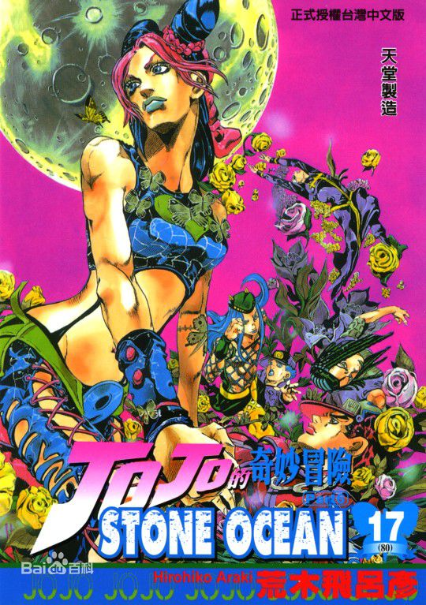

作品简介

JOJO奇妙冒险『ジョジョの奇妙な冒険』（第一部至第四部，第六部至第七部外文名：JOJO'S BIZARRE ADVENTURE，第五部：LE BIZARRE ADVENTURE DI GIOGIO）是由日本漫画家荒木飞吕彦创作的漫画作品。简称JOJO「ジョジョ」。以“生存”为关键词，荒木飞吕彦展开他天马行空般的想象力，创造出了一个个光怪陆离的“JOJO”世界。诡异凛冽的画风，令人窒息的剧情，这么多年以来几乎从来都不会令人感到厌倦，少年漫画的必看之作。 于1987年至2004年在集英社的少年漫画杂志少年JUMP上连载（1987年1·2号刊-2004年47号刊），2005年后在集英社青年漫画杂志UltraJump上长期连载至今，至06年单行本累计销量超过7000万部，2006年在日本文化厅媒体艺术节中被评为第二佳漫画。连载至今已有七部作品，第八部也已经开始连载。根据原著漫画，衍生出了OVA、电影、电视动画、游戏、小说、手办等周边产品。 原画预览 原画预览(12张) 《JOJO》可以说是一部男人的漫画，如荒木本人所说，它的主题是生存以及命运， 在它的故事里，表现了男人（女人）的努力和力量，更描绘了他们之间的友谊和感情。 《JOJO》家族的五代人，都是有着特殊的能力的。除了一代和二代(第三部时用替身，波纹比较少用)，用的是“波纹气功”之外，从第三代起，引入了“替身（STAND）”的概念，把超能力加以实体化、具体化。
作品内容
-

幻影之血
初代JOJO（乔纳森·乔斯达）的父亲收留了其“救命恩人”的儿子，一个名叫迪奥·布兰度的孤儿，抚养他成人， 但迪奥图谋JOJO家族的财产，谋杀了乔纳森的父亲。事败之后，为了报复，不惜戴上神秘的石鬼面具，成为了不老不死的吸血鬼，得到了不可思议的强大力量。而乔纳森后来也跟威尔·A·谢皮利学习了唯一能杀死吸血鬼的波纹气功。他的青春是与迪奥一起的青春，而乔纳森在结尾要为这段青春画上句号！
-

战斗潮流
在二十世纪三、四十年代的纽约，乔纳森乔斯达的孙子乔瑟夫·乔斯达，又遇上了新的敌人：超级史前生物柱之男。柱之男是创造吸血鬼的元凶，他们创造石鬼面的目的是为了获得更加强大的力量，但是因为缺少一样关键的物品，戴上石鬼面只能变成被他们当成食物的吸血鬼。
-

星尘斗士
1984年，迪奥·布兰度和乔纳森·乔斯达所在的沉船被打捞上来。迪奥·布兰度由此苏醒。在之前近100年的时间中，他通过仅存的头部攫取了乔纳斯的身体，一直在海底生存着。更在奈亚婆婆的帮助下，有了一众拥有各种替身能力的手下，同时他也拥有了在当时称为最强也不为过的强大的替身。
-

不灭钻石
1999年，空条承太郎为了寻访外公乔瑟夫·乔斯达的私生子来到了日本的一个小城镇“杜王町”。他找到了他的舅舅，还只是一个高中生的东方仗助。但是没有料到，由此却发现了迪奥·布兰度所遗留的“弓和箭”。在追查“弓和箭”的途中，却发现在杜王町潜伏着一个邪恶的连续杀人狂：吉良吉影。
-

黄金之风
2001年，空条承太郎在调查中发现迪奥·布兰度的儿子祖罗·祖班纳（一译乔鲁诺·乔巴那）居住在意大利，并且突然头发由黑色变成金色，怀疑其潜在遗传的替身能力觉醒，为了将事情调查清楚，委托广濑康一前往意大利进行调查。而祖罗·祖班纳本人，则有着“黄金梦想”，想要改变意大利黑社会的现状。
-

石之海
JoJo的故事至今还在延续，第六部---石之海，主角是空条承太郎的女儿空条徐伦。 徐伦（昵称徐徐，也就是JOJO）年方十六，发生了交通事故……事发后，徐伦的男友及其律师设计将责任完全推到了徐伦身上。无辜的徐伦就这样被关进了监狱。
-

幻影之血
初代JOJO（乔纳森·乔斯达）的父亲收留了其“救命恩人”的儿子，一个名叫迪奥·布兰度的孤儿，抚养他成人， 但迪奥图谋JOJO家族的财产，谋杀了乔纳森的父亲。事败之后，为了报复，不惜戴上神秘的石鬼面具，成为了不老不死的吸血鬼，得到了不可思议的强大力量。而乔纳森后来也跟威尔·A·谢皮利学习了唯一能杀死吸血鬼的波纹气功。他的青春是与迪奥一起的青春，而乔纳森在结尾要为这段青春画上句号！
主要角色
-

乔纳森·乔斯达
乔纳森·乔斯达（Jonathan Joestar），《JOJO奇妙冒险》第一部《幻影之血》中的主角，是初代JOJO，英国人，男，父亲为乔斯达爵士，母亲为玛莉·乔斯达。为报父仇追击迪奥·布兰度，得到威尔·A·谢皮利的帮助，并跟其习会了波纹气功，用波纹气功融化了迪奥·布兰度的身体，头部被迪奥自己切断得以保留。在与爱妻艾利娜·班德顿乘汽轮度蜜月时，被前来复仇的迪奥·布兰度纠缠，两人一同沉入海底，同时乔纳森·乔斯达的肉体被迪奥·布兰度夺去。
-

乔瑟夫·乔斯达
JOJO第二代主人公乔瑟夫·乔斯达，他的身份是乔纳森·乔斯达的孙子。由于出现在第二次世界大战前夕的美国，所以被赋予了象印第安纳·琼斯、劳伦斯那样的英雄主义的性格。出身富商巨贾家庭，又是财产的唯一继承人，父母死亡或失踪，从小在溺爱他的祖母及祖父的老友关怀下长大，必然的在受教育程度上颇显不足。
-

空条承太郎
空条承太郎 （Kujo Jotaro）， 漫画《JOJO的奇妙冒险》第三部主角，第四部主人公东方仗助的外甥，第六部主人公空条徐伦之父，贯穿系列三至六部的重要人物。
-

东方仗助
杜王町葡萄丘高中的高中一年级生，有个漂亮老妈和作为警察的外祖父，喜欢打电子游戏，很受女孩子欢迎。作为荒木老师笔下的人物外形十分时尚，改装校服、喜欢名牌鞋子，因此经常为零花钱苦恼。有着世界上最温柔的力量，十分重视自己的家人、朋友，平时基本上都是温顺忠厚的样子，但是一旦涉及自己的家人、朋友、发型就会暴走。
-

乔鲁诺·乔巴拿
祖罗·祖班纳（中译乔鲁诺·乔巴拿），日本漫画《JoJo的奇妙冒险》第五季黄金之风的男主角。身份为DIO（身体为乔纳森·乔斯达）与某个日本女性的儿子，15岁之前原名“汐华初流乃”。替身为黄金体验（Gold Experience），能力是赋予物体以生命。在对抗黑帮老板迪亚波罗的替身“绯红之王”的过程中，由于取得了“箭”而进化为了“黄金体验镇魂曲”，能力是将任何对本体不利的事实化为虚无。
-

空条徐伦
空条徐伦，《JoJo奇妙冒险》第六部石之海的主角(Jolyne Cujoh)。父亲为空条承太郎，母亲为一位美国女性。日裔美国人。被人设计入狱，后为阻止恩里克·布奇的计划，与好友逃狱。
关于作者

荒木飞吕彦
荒木飞吕彦，日本男性漫画家。作品充满奇妙、冒险的气氛，荒木先生作品魅力不仅体现于有力的笔触和画风上， 还表现在登场人物的服饰上。这大概和他曾立志要当时装设计师不无关系。荒木作品中的角色 ，全都身着各种饰物，服装更是标新立异，类似意大利米兰时装发布会上时装模特穿的衣服。荒木作品另一魅力在于，读者能从画面上感受到真实的存在感。 画面中的人物虽然肌肉发达、身材魁梧，动作却异常轻巧敏捷。而其质感又如同青铜像一样敦实厚重。可以说，意大利时装般的绚烂多姿和巨大石雕般震撼人心的力量，使荒木飞吕彦的作品畅销不衰。